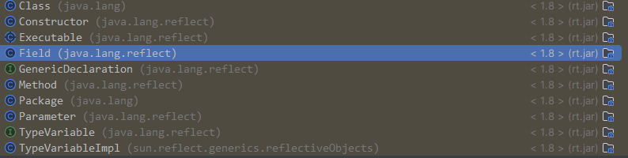

注解
在Java中，注解（Annotations）是一种用于为代码提供元数据的形式。从Java 5开始引入，注解提供了一种在不改变应用逻辑的情况下，为代码添加信息的方法。注解可以被用来在编译时进行代码检查，代码分析，以及在运行时通过反射机制实现一些特定功能。
主要用途
- 编译检查：通过注解可以让编译器对代码做额外的检查，避免潜在的错误。例如，
@Override注解可以用来确保一个方法确实覆盖了父类的方法。 - 代码分析：一些框架和库通过使用注解来进行代码分析，从而减少需要编写的模板代码量。比如，许多Java Web和Spring框架会大量使用注解来简化配置。
- 运行时处理：一些注解可以在程序运行时被读取，并根据注解提供的信息执行特定操作。反射机制常用于此目的。
常见的Java内置注解
@Override：表示一个方法声明打算重写父类中的方法。@Deprecated：标记了注解的元素已经过时。@SuppressWarnings：指示编译器忽略特定警告。@FunctionalInterface：表示一个接口是函数式接口。
自定义注解
除了使用Java内置的注解之外，你还可以创建自己的注解。自定义注解可以通过使用@interface关键字来定义。例如：
import java.lang.annotation.ElementType;
import java.lang.annotation.Retention;
import java.lang.annotation.RetentionPolicy;
import java.lang.annotation.Target;
@Retention(RetentionPolicy.RUNTIME) // 定义注解的生命周期
@Target(ElementType.METHOD) // 定义注解应用的地方（方法）
public @interface MyAnnotation {
// 定义注解的元素
String description() default "This is my annotation";
}
AnnotatedElement
在Java反射API中，AnnotatedElement是一个接口，它是所有程序元素（如类、方法、字段等）的共有父接口，这些程序元素可以被注解。这个接口提供了查询其上注解的方法，允许运行时通过反射机制访问这些注解。Class、Method、Field、Constructor等反射类都实现了AnnotatedElement接口，因此它们都可以用来查询注解信息。

主要方法
AnnotatedElement接口定义了多种方法来查询注解，这里是一些主要的方法：
boolean isAnnotationPresent(Class<? extends Annotation> annotationClass): 判断此元素上是否存在指定类型的注解。<T extends Annotation> T getAnnotation(Class<T> annotationClass): 返回该元素上存在的、指定类型的注解；如果该类型的注解不存在，则返回null。Annotation[] getAnnotations(): 返回此元素上存在的所有注解。Annotation[] getDeclaredAnnotations(): 返回直接存在于此元素上的所有注解，不包括继承的注解。
使用场景
AnnotatedElement接口的使用场景广泛，主要用于反射机制中处理注解。通过这个接口，可以在运行时动态地查询类、方法、字段等元素的注解信息，这对于开发框架、库或需要运行时处理注解的应用程序非常有用。例如，一个依赖注入框架可能会通过注解来指定依赖项，然后在运行时查询这些注解来动态地注入依赖对象。
示例代码
下面是一个使用AnnotatedElement接口查询方法注解的简单示例：
import java.lang.annotation.Retention;
import java.lang.annotation.RetentionPolicy;
import java.lang.annotation.Annotation;
import java.lang.reflect.Method;
@Retention(RetentionPolicy.RUNTIME)
@interface MyAnnotation {
String value();
}
class MyClass {
@MyAnnotation(value = "Hello, Annotation!")
public void myMethod() {
}
}
public class AnnotationDemo {
public static void main(String[] args) throws Exception {
Method method = MyClass.class.getMethod("myMethod");
if (method.isAnnotationPresent(MyAnnotation.class)) {
MyAnnotation annotation = method.getAnnotation(MyAnnotation.class);
System.out.println(annotation.value());
}
}
}
在这个示例中，首先定义了一个运行时注解MyAnnotation，然后在MyClass的myMethod方法上使用这个注解。主程序通过反射获取myMethod方法的Method对象，然后检查是否存在MyAnnotation注解，并输出注解的value属性值。
通过这种方式，AnnotatedElement接口使得在运行时查询和处理注解变得简单直接。
元注解
Java提供了几个所谓的“元注解”，用于注解其他的注解：
@Target：标记注解可以应用的Java元素类型（如方法、字段、类等）。
public enum ElementType {
/** Class, interface (including annotation type), or enum declaration */
TYPE,
/** Field declaration (includes enum constants) */
FIELD,
/** Method declaration */
METHOD,
/** Formal parameter declaration 形式参数声明*/
PARAMETER,
/** Constructor declaration */
CONSTRUCTOR,
/** Local variable declaration 局部变量声明*/
LOCAL_VARIABLE,
/** Annotation type declaration */
ANNOTATION_TYPE,
/** Package declaration */
PACKAGE,
/**
* Type parameter declaration 类型参数
*
* @since 1.8
*/
TYPE_PARAMETER,
/**
* Use of a type 任何类型的使用
*
* @since 1.8
*/
TYPE_USE
}
```
```
class Box<@NonNull T> { // 此处的 @NonNull 就是一个注解，应用于类型参数T上
// ...
}
```
- `@Retention`：标记注解在哪一个级别可用（源代码中、类文件中、运行时）。
- ``` java
public enum RetentionPolicy {
/**
* Annotations are to be discarded by the compiler.
*/
SOURCE,
/**
* Annotations are to be recorded in the class file by the compiler
* but need not be retained by the VM at run time. This is the default
* behavior.
*/
CLASS,
/**
* Annotations are to be recorded in the class file by the compiler and
* retained by the VM at run time, so they may be read reflectively.
*
* @see java.lang.reflect.AnnotatedElement
*/
RUNTIME
}
```
- `@Documented`：指定该注解将被javadoc工具记录。
- `@Inherited`：允许子类继承父类中的注解。
通过使用注解，Java开发者可以为代码添加元数据，改善代码的可读性、可维护性，并利用框架提供的强大功能。
#### 类型注解
在Java中，类型注解（Type Annotations）是Java 8中引入的一个新特性，允许程序员对任何使用到类型的地方添加注解，比如对象的类型、类型强制转换、implements语句以及泛型类型参数等。这些注解提供了更多关于程序如何使用类型的信息，这些信息可以被编译器或者其他工具用于错误检查、代码分析或者编译时和运行时的处理。
类型注解扩展了Java的注解能力，使得注解不再局限于只能修饰声明，而是可以修饰任何类型的使用。例如，你可以在声明中使用类型注解来表明一个字段不应该是`null`，或者在强制转换操作中使用注解来检查转换的有效性。
##### 举例
以下是一些类型注解的使用示例：
``` java
// 使用注解指定某个字段不能为null
@NonNull String myString;
// 在类型转换中使用注解
String safeString = (@NonNull String) unsafeString;
// 使用注解指定实现的接口的特定变体
class UnmodifiableList implements @Readonly List<@Readonly String> {
// ...
}
// 使用注解作为类型参数
List<@NonNegative Integer> numbers;
// 在抛出异常声明中使用注解
void process() throws @Critical NetworkException {
// ...
}
定义类型注解
要定义类型注解，你需要定义一个普通的注解，并使用@Target元注解来指定注解可以应用的Java元素类型。对于类型注解，通常会使用ElementType.TYPE_USE和/或ElementType.TYPE_PARAMETER。
例如：
import java.lang.annotation.*;
// 定义一个可以在任何类型使用的注解
@Target({ElementType.TYPE_USE, ElementType.TYPE_PARAMETER})
public @interface NonNegative {
}
这个@NonNegative注解现在可以用于任何类型的使用场景，以确保该类型的值不应该为负数。
类型注解的用途
类型注解最显著的用途之一是在静态代码分析中，尤其是在创建自定义的类型检查器时。例如，通过使用类型注解，你可以创建一个检查器，它在编译时就能够检测潜在的null引用错误，或者检查数值是否可能超出预期的范围。
除了静态分析外，类型注解也可以被运行时处理工具使用，比如反射机制，它们可以读取注解信息并据此执行特定的操作。这些特性使得类型注解成为Java类型系统中一个非常强大的工具。
类型注解应用
在运行时使用反射来访问和处理类型注解。
首先，定义一个类型注解@NonNegative：
import java.lang.annotation.*;
@Retention(RetentionPolicy.RUNTIME)
@Target(ElementType.TYPE_USE)
public @interface NonNegative {
}
然后，使用这个注解在一个类中标注字段和方法：
public class NumberHolder {
@NonNegative int number;
public NumberHolder(int number) {
this.number = number;
}
@NonNegative
public int doubleValue() {
return number * 2;
}
}
现在，编写一个使用反射来检查NumberHolder类的number字段和doubleValue方法是否被@NonNegative注解标注的方法：
import java.lang.reflect.Field;
import java.lang.reflect.Method;
public class AnnotationProcessor {
public static void processAnnotations(Object obj) throws Exception {
Class<?> objClass = obj.getClass();
// 处理字段注解
for (Field field : objClass.getDeclaredFields()) {
if (field.isAnnotationPresent(NonNegative.class)) {
field.setAccessible(true); // 允许访问私有字段
int value = (int) field.get(obj);
if (value < 0) {
throw new IllegalArgumentException("Field " + field.getName() + " cannot be negative.");
}
}
}
// 处理方法注解
for (Method method : objClass.getDeclaredMethods()) {
if (method.isAnnotationPresent(NonNegative.class)) {
int returnValue = (int) method.invoke(obj);
if (returnValue < 0) {
throw new IllegalArgumentException("Method " + method.getName() + " cannot return negative.");
}
}
}
}
public static void main(String[] args) throws Exception {
NumberHolder numberHolder = new NumberHolder(-5);
processAnnotations(numberHolder);
}
}
在这个示例中，processAnnotations 方法接收一个 Object 类型的参数，它首先检查这个对象的字段上是否存在 @NonNegative 注解，如果存在，它会检查字段的值是否非负。然后，它检查对象的方法，看它们是否有 @NonNegative 注解，并且它们的返回值是否非负。
当然，这只是一个简单的示例。在实际应用中，你可能需要处理更复杂的情况，比如注解用在方法参数、泛型类型等场合。通过类型注解和反射，你可以实现很多强大的功能，比如数据校验、权限检查或运行时配置。
@Repeatable
- @Repeatable
在JDK 8之前，Java不支持在同一程序元素（如类、方法或字段）上多次应用相同的注解。JDK 8引入了重复注解的概念，允许同一个注解在同一声明上多次出现，前提是该注解本身必须通过@Repeatable元注解来标记。
### 使用重复注解的步骤
- 定义重复注解: 首先，你需要定义一个注解，并使用
@Repeatable元注解标记它。
import java.lang.annotation.Repeatable;
@Repeatable(MyAnnotations.class) // 指定容器注解类
public @interface MyAnnotation {
String value();
}
定义容器注解: @Repeatable元注解中的值应该是另一个注解，它将用作包含重复注解的容器。
应用重复注解: 之后，你就可以在一个声明上多次使用这个注解了。
在这个例子中，MyClass 使用了两次 @MyAnnotation 注解。
### 使用重复注解的时候需要注意的点
- 容器注解通常只是一个简单的容器，它的内部定义一个返回注解数组的方法。这个方法必须使用
value作为其名称。 - 当读取重复注解的时候，如果只应用了一次注解，可以直接通过注解类型来访问它；如果应用了多次，可以通过容器注解类型来访问所有的重复注解实例。
### 举个例子
假设我们有一个@Schedule注解，我们希望在一个方法上指定多个调度时间：
@Repeatable(Schedules.class)
public @interface Schedule {
String dayOfMonth() default "first";
String dayOfWeek() default "Mon";
int hour() default 12;
}
public @interface Schedules {
Schedule[] value();
}
public class PeriodicJob {
@Schedule(dayOfMonth="last")
@Schedule(dayOfWeek="Fri", hour=23)
public void doPeriodicCleanup() {
// ...
}
}
在这个例子中，doPeriodicCleanup 方法被标记为在每个月的最后一天以及每周五的23点执行。通过重复注解，我们能够以清晰且简洁的方式表示复杂的配置。
应用
import java.lang.annotation.ElementType;
import java.lang.annotation.Retention;
import java.lang.annotation.RetentionPolicy;
import java.lang.annotation.Target;
@Retention(RetentionPolicy.RUNTIME)
@Target(ElementType.METHOD)
public @interface TrackExecutionTime {
// 可以定义注解的属性，在这个例子中我们不需要
}
import java.lang.reflect.Method;
public class AnnotationProcessor {
public static void processAnnotations(Object obj) {
Class<?> objClass = obj.getClass();
// 遍历所有方法
for (Method method : objClass.getDeclaredMethods()) {
// 检查方法是否使用了TrackExecutionTime注解
if (method.isAnnotationPresent(TrackExecutionTime.class)) {
long startTime = System.currentTimeMillis();
// 执行方法
try {
method.invoke(obj);
} catch (Exception e) {
e.printStackTrace();
}
long endTime = System.currentTimeMillis();
System.out.println(method.getName() + " executed in " + (endTime - startTime) + " milliseconds.");
}
}
}
public static void main(String[] args) {
MathUtils mathUtils = new MathUtils();
processAnnotations(mathUtils);
}
}
public class MathUtils {
@TrackExecutionTime
public static void calculateSum() {
// 假装这是一个复杂的计算过程
long sum = 0;
for (int i = 0; i < 1000000; i++) {
sum += i;
}
System.out.println("Sum: " + sum);
}
}